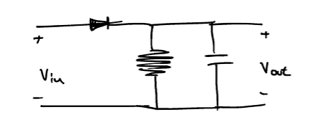

Διάλεξη 3: AM: Διαμορφωτές και ασύμφωνοι αποδιαμορφωτές
Table of Contents
Προαπαιτούμενες γνώσεις
Για την πλήρη κατανόηση της διάλεξης είναι απαραίτητη η κατανόηση των δύο αυτών εννοιών:
- Περιβάλλουσα
- Ισχύς και συντελεστής απόδοσης ισχύος.
Παράδειγμα σε ψηφιακές επικοινωνίες.
Αυτή η υποπαράγραφος, η οποία έγινε ύπο την μορφή παραδείγματος στην τάξη αποτελεί ουσιαστικά την εισαγωγή στο δεύτερο κομμάτι του μαθήματος, την μετατροπή του αναλογικού σήματος σε ψηφιακό.
Στις ψηφιακές επικοινωνίες (αρχικά) μας ενδιέφερε η μεταφορά μόνο δύο καταστάσεων, (0,1), ενώ προφανώς σταδιακά, προκειμένου να μπορούμε να μεταφέρουμε μεγαλύτερο όγκο πληροφοριών, με πιο απαιτητικές ταχύτητες αρχίσαμε να ενδιαφερόμαστε για μεγαλύτερες δυνάμεις του δύο.
Για να μετατρέψουμε ένα σήμα το οποίο έχει υποστεί διαμόρφωση πλάτους σε ψηφιακό, χρειάζεται να ορίσουμε μια διαδικασία (συνάρτηση) κατά την οποία, λαμβάνοντας δείγματα θα τα αντιστοιχούμε σε αντίστοιχες καταστάσεις. Αν έχουμε μόνο 1 bit, αυτές οι καταστάσεις θα είναι το 0 και το 1 αλλιώς, όπως εύκολα γίνεται ξεκάθαρο, αυτές θα είναι πολλαπλάσιες.
Η λογική αυτή επεκτείνεται και για ταυτόχρονη μετάδοση περισσότερων bit και bytes. Με την κατάλληλη διαμόρφωση πλάτους ( χρήση καταλλήλως ορισμένου αριθμού πλατών ) μπορούμε να αναθέσουμε ένα πλάτος στην κάθε κατάσταση, να αυξήσουμε, δηλαδή, τον αριθμό των καταστάσεων που μπορούμε να μεταδόσουμε .
Αυξάνοντας το bitrate αυξάνουμε, κατ’ αυτόν τον τρόπο και την ταχύτητα:
- Μεγαλύτερης τάξης διαμόρφωση τόσο μεγαλύτερη είναι η ταχύτητα.
- Τάξη n-οστου βαθμού1 συνεπάγεται \(2^n\)
- Μεγαλύτερη τάξη συνεπάγεται μεγαλύτερη πιθανότητα σφάλματος: Οι καταστάσεις είναι πιο κοντά μεταξύ τους με αποτέλεσμα καθιστώντας τον θόρυβο ολοένα και μεγαλύτερο πρόβλημα.
Παρουσίαση GNU-Radio
- έγινε μια παρουσίαση FM με την χρήση του παραπάνω πακέτου λογισμικού.
- Συνοπτικά απλά ενδεικτικό των ραδιοφωνικών σταθμών στις διάφορες συχνότητες και ιδιαίτερη έμφαση στην μέτρηση της ισχύος με την dbm κλιμακα
Διαμορφωτής AM διόδου
Ο διαμορφωτής ( και ο πομπός ) AM, είναι ένας φθηνός και απλός διαμορφωτής. Πλέον, όμως, έχει περιορισμένες εφαρμογές. Ακόμα η διάταξη δεν φαίνεται να υπάρχει στο βιβλίο των Καραγιαννίδη,Παπή, επομένως θεωρώ πως είναι μικρής σημασίας για τους διδάσκοντες.
Έχοντας δει τον τύπο της κλασσικής DSBAM-TC διαμόρφωσης (στην οποία αναφέρονται οι σημειώσεις και ως AM απλά, αν δεν υπάρχει άλλη διευκρίνηση), θέλουμε μια διάταξη η οποία να μπορεί, δοθέντος σήματος πληροφορίας να εξάγει σήμα της μορφής:
\begin{equation} \label{eq:2} V_{out} = [A_c + m(t)]\cos{\left(2\pi f_ct\right)} \end{equation}Αυτό είναι επιτεύξιμό με την διάταξη του σήματος:
Figure 1: Η απλή διάταξη ενός AM διαμορφωτή, με χρήση διόδου και αντίστασης.
Αναλυτικότερα, με σήμα εισόδου \(V_{in} = A_C\cos{2\pi f_ct} + m(t)\), η παραπάνω διάταξη θα δώσει έξοδο της μορφής:
\begin{align} \label{eq:4} V_{out} = \sum_{i=1}^{\infty} d_iV_{in}^{i} \end{align}Όπου για \(i>2\) οι τιμές των \(d_i\) είναι επαρκώς μικρές ώστε να τις θεωρήσουμε ασήμαντες και να τις αγνοήσουμε. Έτσι προκύπτει η σχέση:
\begin{equation} \label{eq:5} V_{out} = 2d_2A_C\cos{2\pi f_ct}[\frac{d_1}{2d_2}+m(t)] + d_1m(t) + d_2m^2(t) + \frac{d_2A_c^2}{2}(1 + \cos{4\pi f_ct}) \end{equation}Τοποθετόντας και ένα ζωνοπερατό φίλτρο επί της συχνότητας \(f_c\), πλάτους \(2W\), αποκτάμε απόκριση της επιθυμητής μορφής.
Αποδιαμορφωτές AM
Χωρίζονται σε δύο κατηγορίες, στους ασύμφωνους και τους σύμφωνους αποδιαμορφωτές, με τους πρώτους να είναι πιο απλοί, και ιστορικά πρώτοι να χρησιμοποιηθούν, λόγω της φθηνής διάταξης τους και της δυνατότητας τους να λειτουργήσουν δίχως άλλη πληροφορία (πέραν του διαμορφωμένου σήματος εισόδου)
Ασύμφωνοι αποδιαμορφωτές

Figure 2: Ασύμφωνος αποδιαμορφωτής με δίοδο, μία διάταξη εμφανώς όμοια με τον διαμορφωτή με δίοδο, μόνο που στην έξοδο της έχει τοποθετηθεί παράλληλα πυκνωτής.
Λειτουργία
Κατά το τμήμα της περιόδου όπου η τάση έχει θετική τιμή, η δίοδος είναι κατάλληλα πολωμένη, άγει και κατ’ επέκταση φορτίζεται ο πυκνωτής. Όταν όμως, η τάση λαμβάνει αρνητικές τιμές, η τάση δεν άγει και ο πυκνωτής εκφορτίζεται με ρυθμό \(RC=\tau\). Αυτό επαναλαμβάνεται σε κάθε περίοδο.
Αποτέλεσμα αυτού είναι η οδοντωτή αποτύπωση της περιβάλλουσας
Ιδανικά εδώ θέλουμε η τιμή της RC να είναι κατάλληλα ρυθμισμένη ούτως ώστε να είναι όσο το δυνατόν πιο κοντά στην περιβάλλουσα.
Figure 3: Άστοχη προσπάθεια του συγγραφέα να δείξει την προσέγγιση της περιβάλλουσας από το περιγραφόμενο κύκλωμα.
Υπερδιαμόρφωση
Η υπερδιαμόρφωση, όταν προκύπτει, ουσιαστικά εισάγει στο σήμα εξόδου μια παραμόρφωση στην μορφή ημιτελούς περιόδου.
- Δείκτης διαμόρφωσης.
- Αποφυγή με VOGAD
Σύμφωνοι Αποδιαμορφωτές

Figure 4: Συνοπτικό διάγραμμα ασύμφωνου αποδιαμορφωτή, με την χρήση ταλαντωτή (PLL).
Tο PLL, αποτελεί εξάρτημα το οποίο ρυθμίζουμε ώστε να βγάζει συνημιτονοειδή έξοδο στην συχνότητα που θέλουμε (\(f_c\)). Αυτό το θέλουμε καθώς κατα αυτό τον τρόπο, ο πολλαπλασιασμός των σημάτων \(x(t),c(t)\) μας δίνει σήματα εύκολα διαχωρίσιμα με χαμηλοπερατό φίλτρο. (Αν γίνουν οι πράξεις, ή ακόμα και με το μυαλό, είναι εμφανές πως ο πολλαπλασιασμός θα έχει έναν όρο χωρίς συνημίτονο, και έναν όρο με συνημίτονο στην συχνότητα \(2f_c\)).
Στην συνέχεια, φιλτράρεις εκείνα με το LPF και γλυτώνεις από την DC συνιστώσα με τον πυκνωτή.
Έτσι, τελικά, μπορεί να προκύψει το \(\frac{1}{2} m(t)\), το σήμα πληροφοριών που θέλουμε
Υποβάθμιση σήματος.
Παρόλα αυτά, υπο συνθήκες το PLL δεν κλειδώνει. Σε εκείνες τις περιπτώσεις, λόγω της μικρής διαφοράς φάσης σε είσοδο και \(c(t)\) (έξοδο του PLL) η τελική έξοδος του αποδιαμορφωτή ισούται με:
\begin{equation} \label{eq:1} \frac{1}{2}[A_c+m(t)]\cos{\phi} \end{equation}όπου \(\phi\) η αστοχία φάσης
Ανάλυση των σύμφωνων αποδιαμορφωτών, σε μεγαλύτερο βάθος, γίνεται και στην επόμενη διάλεξη: Διάλεξη 4
Footnotes:
Εδώ είχα σημείωση για σύνδεση με την τάξη διαμόρφωσης πλάτους, για την οποία δεν έχω άλλη αναφορά στις σημειώσεις μου.